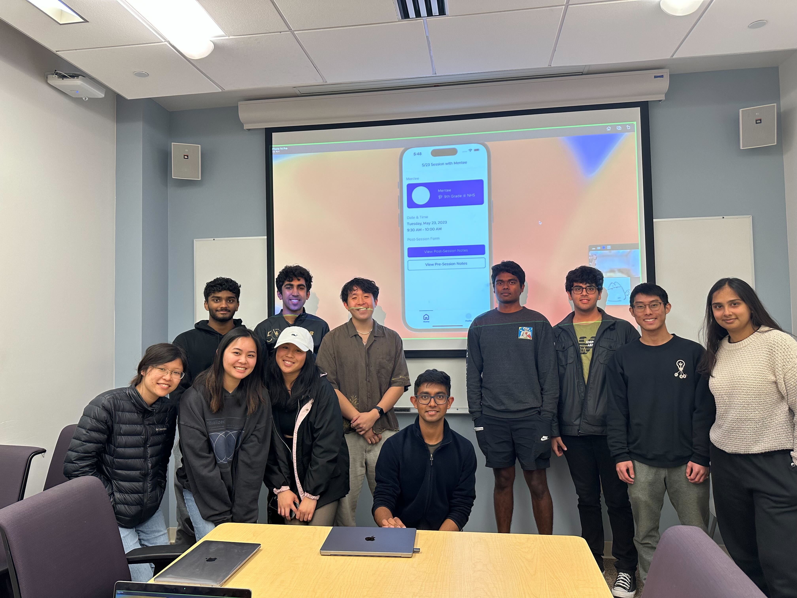

About Me
Hi! I'm a second year undergraduate student at UCSD majoring in Computer Science. I'm extremely passionate about learning and applying cutting-edge technologies towards real-world issues; I am particularly interested in working with artificial intelligence and data, as well as the surrounding infrastructure. I hope to become a productive engineer in roles where I can grow and learn from experienced team members and draw project experience.


Projects
ALUM Mobile App
2023
Building an iOS mobile application (ALUM) to connect high school alumni with current students using Swift UI, MongoDB, Express, and Node.js; worked full stack on MVVM architecture and RESTful API routing. Increased user interaction with application and improved app performance by creating an asynchronous automated notification system using Firebase tools (Cloud Messaging) and Apple Push Notification Services.
Diabetes Prediction
2023
Applied classification methods to patient physiological dataset to predict presence of diabetes with 93% accuracy. Trained XG Boost, Random Forest, and SVM models and compared performance against logistic regression. Optimized model hyperparameters based on custom error rate to minimize prediction of false negatives.
PAP Inventory
2024
Built an inventory processing web application for Patriots and Paws, a non-profit organization providing furniture to veterans, using React, Node.js, Express.js, and MongoDB. Designed authentication system using Firebase Cloud Tools. Optimized MongoDB database queries to allow filtering and sorting of inventory form submissions.
Experience
Professional
Arista Networks
Software Engineering Intern
Engineer multicast routing solutions to enhance network performance and support cloud traffic patterns at scale.
Bear River Associates
Machine Learning/Software Intern
Utilized spaCy Named Entity Recognition NLP method to extract information from mail addresses; deployed on Amazon SageMaker and AWS API Gateway to develop scalable service and handle increased load.
Created a browser-based mail scanning interface in Angular using a cutting-edge document scanning SDK to expedite mailroom processing time by 50% and simplify service implementation on client-side devices.
Rose-STL Lab
Undergraduate Researcher
Conducting time-series classification using predictive LSTM model to classify human movement type.
Predicting causes for lower back pain by training DNNs on human kinematic and muscle activation data.
Executed data preparation (cleaning, normalization, etc.) of raw data to ensure quality input for deep learning.
Triton Software Engineering
Software Developer
Pro-bono development to build an inventory processing web app for a nonprofit providing furniture to veterans.
Working full-stack to create entire authentication system using Mongo, Express, React, Node, and Firebase.
Participating in complete software cycle, from discovery to testing, in a team following Agile environments.
Leadership
University of California, San Diego
Advanced Data Structures Tutor
Teach implementations of advanced data structures (BSTs, Graphs, Tries, etc.) in C++ in a fully remote course.
Facilitate student learning by holding lab hours to help students debug with GDB and draw DSA visualizations.
Assist instructor and TA's in testing programming assignments, assessments, and answering questions on EdStem